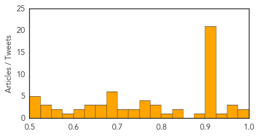

Toggle navigation
Early Warning
Daily Alerts
Unknown
Apr 16, 2015
Compare to:
-
Dengue Fever
Hemmorhagic Fever
Mold/Fungal Infection
Influenza
Meningitis
Pertussis / Whooping Cough
Middle East Respiratory Syndrome
Cholera
Hepatitis
Chikungunya
Yellow Fever
Bubonic Plague
West Nile Virus
Swine Flu
Ebola
Measles
Mumps
30 Day Trends
Web: 0
alerts
, 0
warnings
Twitter: 0
alerts
, 0
warnings
Top Articles:
Showing top 50 articles...
0.995
INFORMATION AND SERVICES IN GOA. Goa News, Goa Konkani News, Goa Sunaparant News, Goan Konakani News, Goa Video News, Goa Yellow Pages
0.992
List of diseases spread by deer tick grows, including malaria-like problems and potentially fatal encephalitis
0.973
Health officials ramp up testing for rare Powassan virus
0.967
The Tick Problem—What Are The Chances That You’ll Survive the Spring, Powassan-Free? : MEDICINE & HEALTH : Science Times
0.955
Six new cases of mystery illness in Hardoi
0.927
What you need to know about the deadly bird flu outbreak
0.918
CDC: Emerging Infectious Diseases, Vol. 21, No. 5, May 2015
0.917
Chicago Tribune
0.917
Chicago Tribune
0.917
Chicago Tribune
0.917
Chicago Tribune
0.917
Chicago Tribune
0.917
Chicago Tribune
0.917
Chicago Tribune
0.917
Chicago Tribune
0.917
Chicago Tribune
0.917
Chicago Tribune
0.917
Chicago Tribune
0.917
Chicago Tribune
0.917
Chicago Tribune
0.917
Chicago Tribune
0.917
Chicago Tribune
0.917
Chicago Tribune
0.917
Chicago Tribune
0.917
Chicago Tribune
0.917
Chicago Tribune
0.917
Chicago Tribune
0.890
Poultry industry under pressure as bird flu spreads to another state
0.833
Ticks Thrive in the Spring and Summer Seasons – and so Is Ticks-borne Disease
0.825
4 more at Kansas high school test positive for tuberculosis
0.807
2014 case of human form of “mad cow disease” highlights need for continued surveillance
0.796
Cruise ship illness 2015: What caused 200 passengers to get sick on two ships?
0.794
Hometownstations.com-WLIO- Lima, OH News Weather Sports
0.782
WHO delivers life-saving health supplies into Yemen - Yemen
0.775
Flesh-eating disease is weakening ISIS, but at what cost?
0.772
The animals in our lives.
0.764
Bird flu could be around ‘for five years,’ as more cases confirmed in Wisconsin
0.756
Health department investigates tuberculosis exposure at Metro State University
0.739
Zimbabwe more famous for what it was, not what it is
0.726
Canine flu outbreak continues to sicken dogs
0.710
CDC: Eat Cucumbers in 2014 and Get Salmonella?
0.705
Ending the ‘Neglect’ in Neglected Tropical Diseases - World
0.694
Yemen: WHO delivers life-saving health supplies into Yemen
0.689
Dog flu could concern more than just dogs if it spreads
0.687
Not just a UK problem and naturopaths are nuts: Campylobacteriosis outbreak associated with consuming undercooked chicken liver pâté — Ohio and Oregon, December 2013–January 2014
0.684
Could a Norovirus Vaccine Become Reality?
0.679
Assessment of Epidemiology Capacity in State Health Departments — United States, 2013
0.675
Health expert not alarmed by local report of lice cases
0.671
Fatal Brain Disease in US Man Likely Came from UK Beef
0.670
Rare case of Mad Cow disease that killed U.S. man linked to British beef
Top Tweets:
No tweets found for Apr 16, 2015
Web/News Articles
Tweets
Article Locations
Article Confidences
